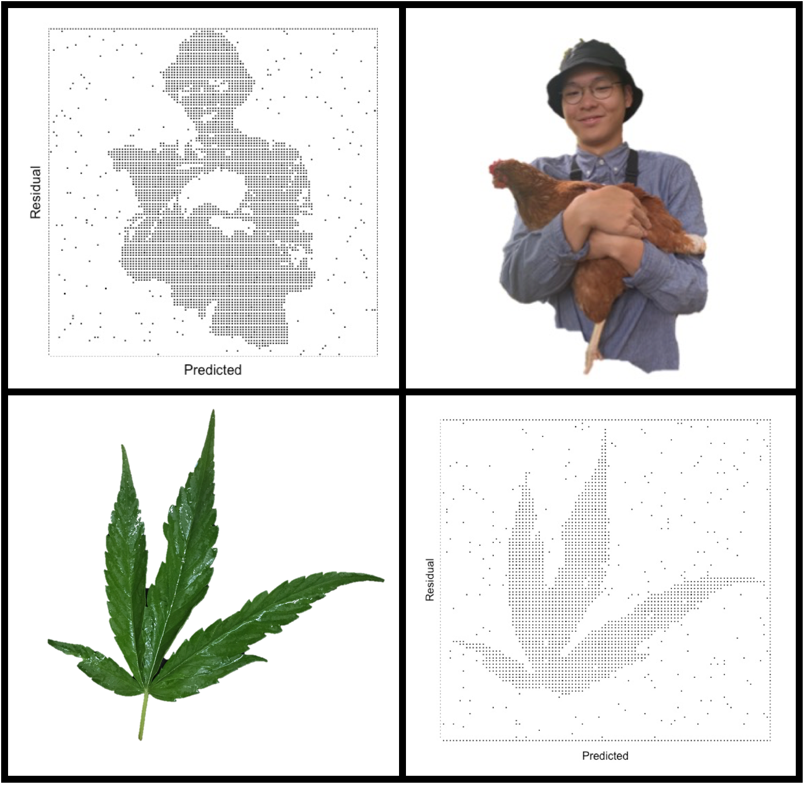

1.Handwritten Neural Network(Task)(Report)
2.Auto Differentation(Task)(Report)
3.Convolutional Neural Network(Task)(Report)
4.Recurrent Neural Network(Task)(Report)
#####1. Tomato Trial：Harvest of tomatoes among four varieties
#####2. COVID-19 in Caribean：Confirmed COVD-19 cases acculuamted among Caribean countries